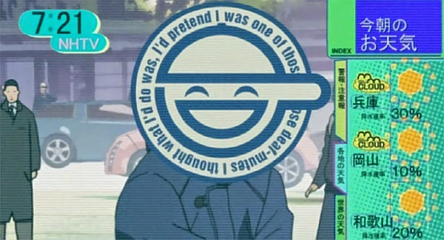

KNOWN EVENTS
Blindfold Ivan : It refers to the MO of hacking into the Public Security Network of the IR-System and cutting out just the images from the moment abduction takes place. The abduction involves women, usually young, and usually in the public circle. They are smuggled out of Japan, where their organs are sold on the black market. The reason there are no witnesses in spite of the fact that they disappear in the middle of busy areas is likely because the eyes of passerbys were hacked to "blindfold" them.
China/Taiwan Alliance : A treaty formed in response of the Security Pact between Japan and the American Empire.
Cyberbrain Sclerosis (2019) : At a time when cyberbrain implantation was just becoming common, a certain cyberbrain disorder of mysterious origins caused a stir in the medical field. Sections of the brain that received cyberbrain implants gradually hardened and eventually lead to brain death. The disorder was later named cyberbrain sclerosis. While the probability of getting this disorder was not high, anyone with cyberbrain implants was susceptible. Since no cure had been found, it was ranked along side tuberculosis, cancer, and HIV the incurable diseases of the 20th century. In terms of specific symptoms, slight memory loss is the disease's preliminary warning sign. As the illness worsens, symptoms include deterioration of speaking ability, incompatibility with external memory storage units, and severe memory deficiency. Eventually, those afflicted will face brain death, or so it was thought. While it was possible to delay the symptoms' progress with appropriate treatment, it was believed sclerosis itself could not be cured, causing a momentary yet considerable panic within the cyberbrain-implanted population when the disease's existence was first disclosed to the public. As if they had entirely forgotten that they cheerfully advertised the advancement and application of cyberbrain technology in the past, various media began to indulge in their customary off-the-point and delayed criticism of high-ranking government officials who retired to posts in cyberbrain manufacturing companies.

Concurrently, the public jumped on the bandwagon, resulting in the creation of many anti-cybernetics organizations represented by groups such those belonging to the Human Liberation Front and those advocating the resurrection of return-to-nature movements.
The Murai vaccine, which was developed by Dr Murai Chitose, suppresses Sclerosis. However, medical experts at the time consisted largely of MicroMachine treatment advocates. The vaccine treatment developed by Dr. Murai was conceptually behind the times, and the majority felt that allowing his research would delay completion of the concurrent research on MicroMachine treatment. Perhaps because of such concerns, approval of the Murai vaccine was delayed. Dr Murai, who hoped for the approval of his vaccine treatment until the very end, died an unfulfilled death in February 2021 at age 68, without witnessing the decision of the drug evaluation committee. However, in April 2021, the Murai vaccine was suddenly approved for special use by select individuals, after initially being rejected. This approval was not made public, and patients who used the vaccine do not officially exist.
Pressured by the public for a rapid response, the government announced a new treatment involving MicroMachines in order to pacify them. The publicized treatment did not have a significant effect, and many questions remained. However, the media dashed off to search for the next scandal after burying a few scapegoats, and the public forgot their problems with customary alacrity once the media dropped the subject matter. As a result of such routine work, the hysteria over anti-cybernetics movements consequently subsided. But the past of CS and the existence of Murai did not die in 2021. Even now, there are those who are interested in the situation.

Enter the Sunflower Society, a Non-Profit Organization that supports individuals who file suit against the government and large corporations. They demanded disclosure of information on the Murai vaccine and those who have received the vaccine from government agencies on multiple occasions in the past. However, the Ministry of Health, Labor, and Welfare used the Individual Privacy Act as a shield to reject their demands.
Cyborg Anti Discrimination Law : After membership in the Human Liberation front gained popularity, the Government discovered anti-cyborg crime increased substantially. Some cyborg refugees during the war discovered their sacrifice to augment themselves backfiring as some had trouble procuring employment upon returning home. To combat this effort, the Cyborg Anti-Discrimination Law was formed to deal with this new form of intolerance. Since its formation, Cyberization has reaches such a common point in the world, the law is somewhat soporiferous.
Echelon : The largest electronic spy network in history, run by Empirical America, the United Kingdom, Canada, Australia, and New Zealand, they capture telephone calls, faxes and e-mails around the world. Echelon is estimated to intercept up to 5 billion communications every day.
Geofront : A deep subterranean development. The TAR is a Geofront. Geofronts are also known to be the Headquarters of major corporations. Bertrave features more than one. They are often virtually self-sufficient so some of them in the world have dubious sovereignty. They always have some form of self-sufficiency. Almost all of them run off their own nuclear power plants. Sometimes Geofronts are also the titles of power plants themselves.
Ghosts & Shells : The term Ghost, began circulating sometime after World War III but the origin dates back to early decades of the last century. It refers to an individual's mind or essence of being... their soul perhaps, although that term is somewhat of an antique in this day since the soul denotes spirituality while the ghost is a subject of science. Its what differentiates a human being from a robot. Regardless of how much the biological is replaced with cybernetic, a ghost retains its humanity and individuality. Usually, such a term, separating it from the Shell, was meaningless. One was their Ghost in their Shell. Separation could not exist. That is not longer the case. One could exist without a shell. And shells could exist without Ghosts. The Shell refers to the body, organic or unorganic.
One could even transfer of a ghost from one body to another. Existing without a proper Shell (even the basic rudimentary forms like brainboxes) results usually in degredation. A consequence of Ghosts and Shell separation arose in criminology. When a criminal is convicted of a crime, a technical analysis is done either determining if the crime was committed due to material defects in the biological or the cybernetic systems in the criminal brain. If a mechanical defect arises, said defect is repaired and the convict is released. If the crime results from the individual's ghost, the process becomes more invasive. Anything from personality reprogramming to full ghost erasure can occur. If the Ghost contained itself in a prosthetic body, the body would usually be sold off for parts.
Incident at Shunuiji State : In the year 2024, when the nations were exhausted from the fourth world war, the American Empire called the deployment of UN troops to the Peninsula where internal conflict still continued. That action triggered Self Defense Force Deployment, the first time leaving Japanese territory. The American Empire started its resurrection as the world's dominant power by using the deployment as a way to obtain excavation rights to the Uranium mines in the Northern Peninsula from the Unified Government. Japan could not refuse the UN, considering how enthused it was about wartime military procurement. Thus, this became the first trial for the SDF, which has been able to avoid actual combat throughout two world wars, aside from the recapture of Nemuro. The Prime Minister at the time, fell to a terrorist bomb.
The Government had strict control of the media in order to suppress domestic opinion and decided to deploy the PKF (a Commando unit comprised entirely of full Cyborgs) to Shunuiji State, which was thought to be relatively safe. The agency in charge of this disinformation campaign was the current Cabinet Intelligence Agency's predecessor, the Cabinet Press Agency. At the time, Shinuiji was a Special Administrative Region and a trade center, making it exempt from attacks. But after the unified government was established, the remnants of the defeated people's army chose as their battlefield a rural area about twenty kilometers west of Shinuji. The altitude was high, making it ideal for guerilla warfare. Soon after the cyborg infantry arrived, it was decide that two units would be deployed as a counter-guerilla punitive force, so they began moving into the frigid mountains. This was the first time units were equipped with hybrid cyborgs on the battlefield, but the PKF-issue hybrid cyborgs would not have experienced much discomfort, even while advancing through snow in -20 degrees Celsius weather. At the time, the main infantry was on heightened alert after receiving an intelligence report that the last elite troops of the people's army were plotting to attack Shinuiju State. The PKF Company was to circle north, around the enemy and launch a preemptive strike. However, on the way, the platoon found a refugee camp along a river on the border that was not mentioned in the intelligence report. The camp was being looted by the soldiers of the people's army who had, essentially, become bandits. Seeing this happen before their eyes, the platoon was spurred into combat by moral indignation. While there were only thirty of them against one hundred and twenty soldiers, the fighting quickly reached a conclusion. The platoon was a group of elite with cyborg bodies, while those who were attacking the camp were mostly unarmed and starved, even if they were former soldiers.
After that, the PKF received several reports on the People's Army, but that was their only actual combat. They were forced to stay on alert due to the extreme cold and the possibility of a guerilla attack at any time, but for the main infantry positioned back in the city, the tension was not that great. But after a while, a problem surfaced in the platoon camp out in the farmland. Post Traumatic Stress Disorder. The experience of having massacred people in their first fight, not to mention the fact it was very uneven, began to eat away at the young soldiers. Those who still had their original lungs and other organs tried synthetic alcohol and hashish that has been brought in by refugees, desperate to escape the nightmarish flashbacks of the massacre. When order gradually began to break down in the SDF, the Japanese media pelted them with insensitive comments. The massacre at the refugee camp had not reached the media due to censorship, but their criticism of the man's behavior was all the more severe because of it. In addition, their freedom was restricted by the policies designed to prevent the men's disgrace from reaching the media. They were even barred from returning to Japan. The refugee camp massacre near the border leaked to part of the media and a false rumor that is have been executed by the JSDF began to circulate. The farmers vehemently condemned the JSDF and demanded an explanation. However, under media censorship, neither the young soldiers, nor their superior officers could defend themselves. Three months later the remaining members of the People's army surrendered and the JSDF was clear of all further obligations. Everyone in the media stopped talking about the massacre after that.
Japan / I.A. Security Pact : Japan used the muscle of the Japanese Miracle to encourage a Security Pact with Imperial America where IA was the sword, Japan was the shield. They could use the deterrent of nuclear weapons and the Japanese miracle against other nations. This cooperation has been seen as a good idea and bad idea to members of Japan's hierarchy, who believe Japan may loose its drive for independence if the Security Pact goes through.
Japanese Miracle : A swarm of MicroMachines capable of removing radiation from the environment found itself dubbed the Japanese or Asian Miracle (depending on who you ask). Japan was able to regain its status as a superpower after the implementation of the radiation dispersal removal method. Japan is the only country with the technology to remove harmful radiation, a muscle they flexed during the last war and used at the end of World War III. There is a reference to an Asian Miracle. It is assumed this is the same thing and not a different use of same technology in a different arena. Japan hoped this would gain equal, if not superior footing with the American empire.
Laughing Man : Youth and subculture have iconified the logo of the Laughing Man, the most widely known case of corporate terrorism since the last war. It all began with the kidnapping of Serano Genomics' CEO, Ernest Serano. Soon, after six major MM companies were blackmailed. The symbol of the Laughing Man is widely known. The case and details of the origin and identity of the culprit is not.

MicroMachines : Also known as Nanites, the technology around subatomic machines changed the world forever. Huge advances in science and industry occurred because of MicroMachines. Many diseases became extinct. Food problems ceased being an issue. The original breakthrough (its time and patent ownership) fell into the annals of history, somewhat forgotten. Now, almost all major corporations have branches dealing with MicroMachines... at least those who are not totally dependant on that technology. It can be joked that MicroMachines are more abundant on the planet than insects. At first, they were designed to cure genetic defects in animals. This later evolved when cybernetics became more than just a supplementary technology. Nanotechnology allowed perfect grafting of circuitry into the organic, opening the doorway to a ever expanding highway of cybernetics, leading all the way to the full prosthetic bodies available today. None of the cybernetics on the planet (from replacement limbs to cyberbrains to full cyborgs) would be possible without MicroMachines. All robots (big and small) owe their existence to them. They cured virtually all disease, ended hunger, and even destroyed the pollution clouding the biggest cities (although the inhalation themselves did offer a temporary risk to certain sensitive lungs). MicroMachines removed the radiation from destroyed areas.
When philosophers talk about the age-old legends of the Philosopher's Stone or the Fountain of Youth, they all agree mankind found it.
MicroMachine measure 1/1000000 of a millimeter. Micro Machines can root themselves so much in a subject's brain, they can never be removed. Ones that die simply take up space. Not even inserting more MMs can remove the dead ones safely without damaging the brain cells around them. This is considered not a problem given the size of MM in accordance to the brain around them... sometimes its just better to leave them there.
Meguro Recapture Operation : During the invasion, naval vessels attempted a mass landing across the northern island. Even though Nemuro is the largest known conflict occurring on Japanese soil, most still consider Meguro a conflict of equal footing. Meguro's capture occurred soon before or after Nemuro (it is never detailed). Unlike Nemuro, where the enemy never gained a foothold, Meguro became the setting of a major urban battle as the enemy had rooted themselves in the city. Meguro City's remarkable geographical feature is a hilly landscape with many steep rises and descents, despite its location on the east coast.
MM / MicroMachined Rice : Micromachine technology, which was misappropriated for use as a link to agricultural product improvement, not just in the fields of cyberbrain and prosthetic body manufacturing, was cheap and safe, made real the development of high-yield crops, and played a major role in the worldwide food supply problem. Although the use of micromachines in food products was first met with physiological revulsion, MM-rice, rice to which this technology was applied was widely used in farmland-scarce Japan, and its development and refinement due to the increased food supply demands during the war made it a positive recipient of government support. Among these, Rikuu-132 drew attention as high-yield, all-purpose rice that could withstand lack of sunlight and water and was also resistant to cold-weather damage.
MM-Rice cured the world food problem. Rikuu-132, its technical term, was made by the TAR (Tohoka Autonomous Region) and when the scientist that created it, Yazawa, died, Japan filed for patent rights under orders from the Minister of Agriculture, Forestry, and Fisheries. The residents of the TAR did not approve. They do not recognize Japan's authority over them but could not get headway with the UN that did not recognize their status. Certain more radical members of the TAR resorted to terrorism to make their case known. The rise in recent years of consumer unease regarding MM agricultural products due to the general distribution of improper produce, is troubling. Awareness of consumer food safety is growing on a worldwide scale, and even abroad, movements to reorganize food safety administrations are increasing their activity. Due to climbing patent costs, the number of products that can only be dealt in by economic superpowers is climbing. Expensive patents are an evil practice, and hunger countermeasures utilizing MM produce is a rocky road. Movements calling for copylefting or patent reductions from a moral standpoint are becoming more active in many countries aboard. With calls for copylefting on the one hand, activity to preserve micromachine technology and copyrights as intellectual property rights continues unabated.
MM-Rice Terrorist Act : When initial attempts to secure independence from the Japanese Government failed, members of the Tohoku Autonomous Region committed to terrorism. This involved a subtle plan to distribute tainted MM-rice laced with a Cellular Suicide Program built in to high-class restaurants around Japan. This procedure developed for many months until the terrorist plot was finally revealed with the ransom letter released by the TAR. Kei Yazawa, who had been one of the suspects, died many years before the operation, and the introduction of a virus into the MM-rice was entirely orchestrated by Toshimi Tagami, the Autonomous Regional Director, and formerly known as the "Choreographer". Toshimi Tagami entered into a prosthetic body of the same make as that of Motoko Kusanagi with the intent to cause personal disturbances with Section 9, but due to Batou's discovering the preserved corpse of Kei Yazawa and realizing the facts of the matter, her plan was foiled, and the attempt at confusion also ended in failure. With the dispersal of the MM-rice source code that occurred automatically upon the death of Toshimi Tagami, a vaccine was developed in short order, and the case was wrapped up without a single person falling victim to the tainted rice. Assuming for the moment that Toshimi Tagami had succeeded in her personal disturbance of Section 9, she would have retreated to Niihama as a member of Section 9 after destroying all evidence by leaving Motoko Kusanagi behind and sinking the Autonomous Region. Having become Motoko Kusanagi, we may assume that she would have conducted intelligence operations within the government and military to avenge her younger brother, Kei Yazawa.
Nemuro Landing Operation : Nemuro city and port are located in the most northeastern end of Hokkaido. It is the capital city of Nemuro Sub prefecture. The city has an estimated population of 55,056. It is a city with a history, since Adam Laxman arrived from Russia to negotiate with Japan for the first time in 1792. Exchanges with Russia have been fostered in the form of the removal of a measure that regulates Russians' entry, and by visaless exchanges with residents in four northern islands. In 1994, it signed a sister-city agreement with Severo-Kurisk, Sakhalin, Russia, which is deeply related to Nemuro through their main industry, fishery. Nemuro played a very important role as a base of international exchange, especially with the northern region. All seemed well for the small town...
...then came the invasion. A major attempt during World War IV where a rival nation attempted a landing in Japanese territory occurred in Nemuro. The city's name now became synonymous with the Nemuro Landing operation. The JSDF deployed as fast as possible to the area of Hokkaido. The town was already overrun. The fighting grew long and gruesome on both sides. Eventually, the Japanese forces retook Nemuro. This probably occurred before the SDF had permission to leave Japanese territory... to go on the offensive. Almost every single soldier in reserve was called to Nemuro. Most members of Section 9 participated in this operation.
Neurochip : Robotics forever changed when Dr Asuda of Kenbishi developed a revolutionary AI known as the Neurochip. It allowed Ghosts to inhabit Cyberbrains without any organic content. It raised the question as to what defines a human if there is nothing organic remaining. The existence of the Ghost would be reason enough. Some theorized that if a Robot or an AI would ever develop a Ghost, it would be with the help of the Neurochip. As a brain center of Robots and AIs, the Neurochip never gained popularity, possibly because of the fear that robots would, in fact, develop ghosts. Asuda believed that if the Neurochip was only given basic instructions, given time and input, allowing itself to grow, that it could indeed create the very basic parameters of a ghost. However, Asuda could not secure the patents and lost the designs to his employer Kenbishi. They then developed the Fuchikoma & Tachikoma, intelligent tanks equipped with Neurochips. When one Tachikoma was given natural oil, it damaged its hardwired instructions, allowing the Neurochip freedom to write its own code. This allowed Asuda's dream to become a reality and the Tachikoma was the first robot to gain the basic skeleton of Ghostline.
Ostrich Meat : Ostriches are only bred for meat purposes. They have become the cattle of the 21st century.
Paralympics : Properly speaking, the Paralympics is the other Olympics held for people with physical disabilities. However, in the modern age of 2030, the competitors are people with prosthetics. And somewhere along the way, the Paralympics became mainstream and the Olympics, where non-prostheticized people gathered, was reduced to a decorative traditional event. The realization of physical abilities that far surpass normal strengths also inevitably implies a change in the nature of sports. Considering the physical abilities of a prostheticized person, there are records certain to be set in track and field events that cannot compare to those of the Olympics.
Project Sunset : The last World War spread to the corners of the globe. The American Empire pulled out of South America early, but not before engaging in some of the most vile practices known. In their final days, the CIA concocted operations to make enemy countries lose their will to fight. They sent Guerilla teams into enemy territories, settle in, make friends with the local population, and then have them killed in atrocious way to demoralize their allies. Many members became mentally unstable afterward. Some went completely psychotic and continued their killings after the War ended.
Prosthetic Refugees : This refers to the unavailingly prostheticed humans from injuries incurred during wartime. They are given refugee status by the UN or a Non Government Agency (NGO). This is another term of the Refugees in the intern camps around Japan. They have been a source of some trouble.
Refugee Relief Fund : Japan took in 3 000 000 Refugees after the end of the last war. Since then, there has been substantial money set aside to support them. As time, progressed, however, their burden was felt increasingly by the government and people. Many attempted to find work but most still live off sucking the tit of government. Discrimination ensued. Some of these members are those who fought for the Japanese governments while others are immigrants, captured after the war concluded and had no home to return to as their home ceased to exist.
Refugee Special Treatment act : The agreement on the benefits the Refuges from the war would gain. However, this act was repealed by the new Prime Minister in 2032 before any supplementary acts were introduced. It was not released if the refugees would be granted Japanese citizenship. This caused quite stir when it occurred. Of course, the RSTA was originally conceived as a temporary measure and was never meant to extend as long as it did. The problem remained of what to do with the 3 000 000 refugees in the five camps around Japan. Currently, Refugees are limited to the camps and are not allowed to leave without special ID. Some have gotten jobs but are treated somewhat like paroled inmates while outside. They get to live and have a job outside the camp but Refugee officers make sure they know that could be pulled at any time. Some have gained Japanese citizenship. However, this is rare unless a refugee offers a usable skill to the outside world. Applicants wanting Ids or Permits (let alone citizenship) must pass mental and physical exams. The majority of Refugees have some form of cybernetic implant. Worn and well out of service, the often fail the minimum requirements for functionality. Those that try to escape are either killed or deported.
The Security Pact : In 2033, the Japanese Prime Minister avoids an assassination attempt before meeting representatives from the American Empire to re-negotiate the Security Pact.
Sensory Perception Wire Tap Act : When cyberization became commonplace, the police discovered basic hardware wiretaps obsolete. The Sensory Perception Wire Tap Act allowed law enforcement personnel to tap into human sensors, like audio and sight, for surveillance. Of course, judicial permission was still necessary for evidence to be properly entered in court.
World Summit Terrorist Attacks : 2028-2030. A terrorist group called "Angel Wing" planted bombs on glass skyscrapers in Shanghai, Moscow and Paris to protest against nations making decisions for the rest of the world. The acts are related to the damage cause by raining debris.
World War III : Very little is known about the events that occurred during the turn of the new century. What is known is that the split of the United States as it was known for two hundred years occurred as a side effect of this war. Empirical America formed from the Southern States. By this data, it becomes clear that American, in fact, lost that war, but with whom or for what reasons, remains unclear. Japan was also involved in the war but in a background status, and never committed SDF forces to actual combat. Some evidence points that the war occurred in Eurasia. Nuclear exchanges occurred in the Asian sphere. The process of removing radiation was referred to as the Japanese Miracle. The only known casualty of this limited exchange was Tokyo Prefecture, which was destroyed to the extent that the majority of it sunk below sea level. To this day, the deconstruction of the site continues. The arrival of the Japanese Miracle is said to have contributed to the American's Empire waning power in this decade, due to the fact that nuclear weapons lost part of the their deterrent, the side-effect of nuclear fallout.
World War IV : WW IV goes by several names. Sometimes it is referred to as the Non-Nuclear World War IV or the Second Vietnam War. However, it is known that the conflict of the war centered on the Peninsula, thus the Second Vietnam War reference. In the end, Empirical America and Japan came out on top, victorious. The United Nations were also involved and it is believed that the Peninsular may be under a new Unified government. Japan, because of their treaty with Empirical America, never became involved in actual combat with the exception of Shunujii.
Evidence also points that military flare-ups occurred in South America and Mexico during this time. Mercenary groups appeared in the hundreds, populated by remnants of armies once connected to nations that no longer exist. The increase in independent states and sovereign regions grew from the chaos that was the last thirty years. The planet remains more divided as ever and several locations exist in the planet where sovereignty falls into question, where no one is really sure who owns or governs what.
Zebra 27 : Zebra 27's political views are not perfectly clear as he had already established a career before joining the HLF and some rumors pointed he was hired on as their leader and did not join under common views. Zebra 27 made an illegal fortune as an arms dealer in one of the Africa's most densely populated nations, Burundi. He left his command in Bujumbura, the capital city and shifted his operations with the HLF to Japan. He is fluent in English, Japanese, French and Kirundi. His country origin is not known. In fact, since many intelligence experts, including Section 6 which had been tracking him, belived Zebra 27 changed his identity at least once, many doubt the current leader of the HLF is the same Zebra 27 from Burundi. Others belive they are the same since Zebra 27 did vacate from his dealings after a large shake-up in South Africa found his security lacking in his current occupation.
Cyberbrain Sclerosis & the Laughing Man
It is believed the cover-up of the Murai vaccine was instigated by the minister of Health and Safety at the time with the help of the CEO of Serano Genomics, the first company to apply for a patent of using MicroMachines towards CS. It is thought that the final culprit in the cover-up was the Minister of Health and Safety, Yakushima, and not the CEO of Serena Genomics as SG simply beat out a half dozen other companies in the process of developing a MM treatment for CS.
The arrival of CS and cover-up of the Murai Vaccine is said to have been the catalyst for the Laughing Man case, the most widely known case of corporate terrorism since the war.
Toshimi Tagami
Born in the Tohoku Region to parents who ran all sorts of financial businesses. Census records at the time list her real name as Toshimi Yazawa. Soon after the birth of her brother, Kei Yazawa, their parents divorced. After the divorce, she used Tagami, her mother's maiden name. Recognized as a genius in the field of program construction, she received a scholarship and entered the military academy. After making it thought the special curriculum, and joined the force as an officer cadet. Assigned to 7th Special Forces Tactical Unit, she engaged in missions where she would wage psychological attacks by switching prosthetic bodies and infiltrating the enemy. Because of this unique tactic and her many meritorious deeds, she came to be called the Choreographer. Her specialty was using her unparalleled psychological profiling skills to anticipate the enemy's tactics and movements, using the tactic to neutralize them with a minimum use of armed forces. She came to be called the Choreographer when, during the war, a high official in the JSDF commented that she "made the enemy dance in the palm of her hand". This is only recorded in few top-secret military flies, but the upon learning of the actions the Choreographer took during the Nemuro Landing Operation as leader of the 7th Special Forces Tactical Unit, to a handful of people the Choreographer became a symbol of menace to both friend and foe. After the war ended, she was appointed by the military as director of the Tohoku Autonomous Region, where she was reunited with Kei Yazawa, her long-lost brother.After joining the military, she became a full cyborg due to an accident during training. The prosthetic body was a market model, and no particular improvements where made to the capabilities of its hardware, and other than an expansion of external memory in its cyberbrain for data processing purposes, it has no distinguishing characteristics. Attached to Inspector General, Tohoku Front, Ground Self Defense Army.
2011 : joined the JGSDA as an officer cadet. Many examples of meritorious service follow.
2024 : appointed as Regional Director of Tohoku Autonomous Region, takes office. In her inauguration, issues the Autonomous Region Charter.
2027 : with the role of the Tohoku Autonomous Region over, she receives the military's decision and declares that the region is to be dismantled. The researchers who have been employed within the Autonomous Region are advised to leave.
2028 : having received the dismantling proclamation, she is appointed as Dismantling Site Supervisor.
Fuwa's Genetics Research "The Development of Joint Engineering in Applied Entomology"
In this research, I make theoretical preparations for various arrangements in order to make practical use of applied Entomology, which was derived from the development of technology to exterminate harm insects that spanned the end of the 19th Century to the beginning of the 20th Century. Applied Entomology had its beginnings in the field that was established and formed by the development of technology to eradicate the Rocky Mountain Locus, which were swarming the 1870s America (now Imperial America). However, it was made more complicated by the appearance of MM technology, which didn't wait for this century to appear, and the current main focus is on the research and development of new technology that makes use of the bodies of insects. On the other hand, Joint Engineering is a key ingredients of the master/slave mechanism which are indispensable in Armed Suit (powered exoskeleton) development. These mechanisms, the aim of which at first was to mimic human movement, are fast reaching their limits in controlling the sort of multiped powered exoskeletons that are currently in use. And thus, my goal is the development of a next-gen master/slave mechanism that is more natural and does not put an unnecessary load on the human control system by taking the organic functions of insects, multiped organisms occurring in the natural world, and replicating them with micromachines on a genetic level. Applied Entomology and Joint Engineering. The fusion of research taken from both fields by means of micromachines is research that hints at new capabilities in the control systems of complex, multiped machines which are likely to appear in the near future. I foresee many difficulties in pursuing this merged research that is as yet untapped, but I believe that it will surely yield results that will be valuable for the future of humanity.
Takeru Fuwa, Niihama University (Applied Entomology)
"Declaration of MM-rice Terrorist Act" (Tohoku Autonomous Region Declaration of Independence)
We, the citizens of the Tohoku Autonomous Region, feel bottomless rage at having the development patent rights for the MM-rice that we ourselves developed confiscated from us by the government. It does not bear repeating that "Rikuu-132" is premium MM-rice, fine enough to be sold to upscale restaurants throughout Japan. "Rikuu-132", delivered from the Tohoku Autonomous Region, was also used at the MM-rice Promotion Society dinner which was held at the Kuretake restaurant recently. Perhaps you should have given more thought to how you are still using the rice whose development patents you stole from us. We took the liberty of doing a small amount of tinkering to the MM-rice we sent to the dinner. In this way, the micromachines in the rice that was taken into the body will be broken down and be taken into the bloodstream. And we are able to remotely alter these micromachine structures in the bloodstream as we see fit. It is possible to block the blood vessels by causing a chain reaction with the micromachines already present in the body. Once this alteration in the structure of the micromachines is carried out, even the heartiest human will be dead in minutes. Our demands are simple in the extreme. Make the Tohoku Autonomous Region independent from Japan. This is all, if our independence is not recognized within 72 hours, we will trigger the virus program planted in the MM-rice. These micromachine cancellation key exists only here in the Tohoku Autonomous Region. It is possible to create an antidote, but it would take at least 100 hours. The deadline is in 72 hours. Will you recognize the independence of the Tohoku Autonomous Region, or will you choose your own deaths ? The choice is yours.
Obituary Takeru Fuwa July 12, 20xx
Niihama University Assistant Professor Takeru Fuwa, worldwide authority on applied entomology and top man in Armed Suit research, has been stabbed to death by someone on the university campus. The culprit is unknown, but many conspiracy theories are going around. Because of his connection to the American-Russian Alliance and the Tohoku Autonomous Region, known as a sort of New Religion commune, the opinion that he was "executed" seem to be prevalent. The reason for this is that Professor Eichi Gotoh, another Armed Suit researcher, died just before the murder in a plane crash of unknown cause while flying to Europe to take part in an academic conference in Milan, Italy, and soon after the deaths of Professors Gotoh and Fuwa. "Man-Machine", the trade journal of the America-Russian Alliance, commented on these incidents, saying that it was good news for Armed Suit developers. It ran an editorial saying, "Those in charge of executions in the Alliance showed to the world that they were gauging the timing that was suitable for the execution of spies". In the background is the conjecture that Fuwa might have been a spy. What lends credence to this is that he did, in fact, live in the Alliance in his student days. He experienced its severity with his own body. He was a man who understood the Alliance. Some conjecture concludes that it may be for that reason that he was targeted by the Alliance.
Prof. Fuwa had a high regard for the military applicability of applied entomology, and, saying, "I undertook Armed Suit development because insects are so valuable for the basic research of joint engineering". He contacted the American Empire and Alliance, heedless of the danger, and even after the war was declared over, he apparently turned down offers of "protection" from regional police bureaus and Self Defense Army related people, saying, "the war's over", and lived an unguarded life.
Eichi Gotoh
Although a researcher of little repute, his paper of "Research on Autonomous Micromachines" was a clincher for him, and his research on radioactively cleanup, the "Asian Miracle", put his name on the map, making him a household name worldwide. After the Asian Miracle, those concepts that were debated in eccentric, bold moves, became the subject of scorn in academic circles as impossible and "lacking common sense", but Gotoh, who had stayed true to his research ideology, didn't let such talk from the outside change his attitude. He moved to the Tohoku Autonomous Region, which had hired him, and continued his research independently. With the end of the war approaching, he was hired as a visiting professor at a university in England, and his life was cut short in an accident on the flight to England. Years after his death, his state of theories was reappraised, and he is now called a "genius before his time", and prized as "the authority on MM engineering" and "a scientist of proud isolation".